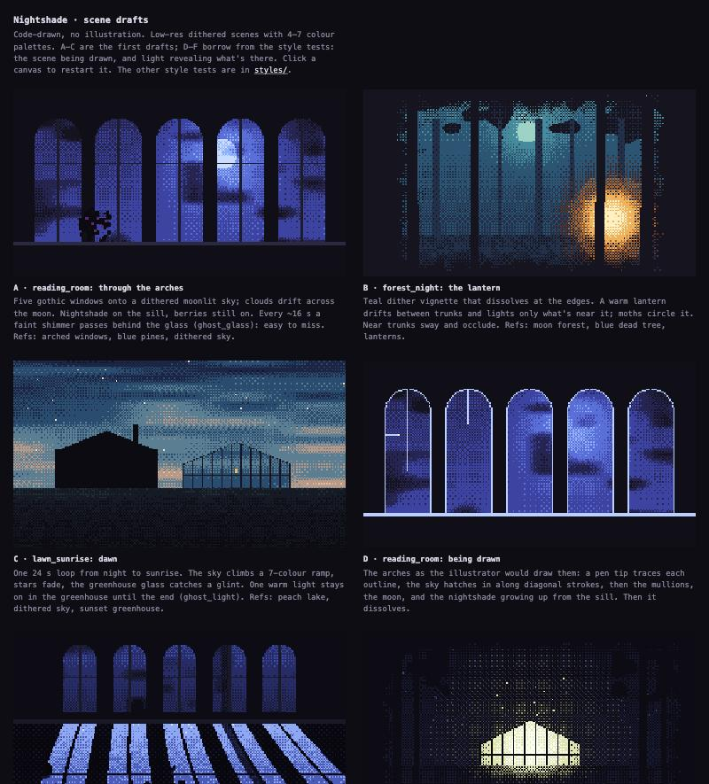
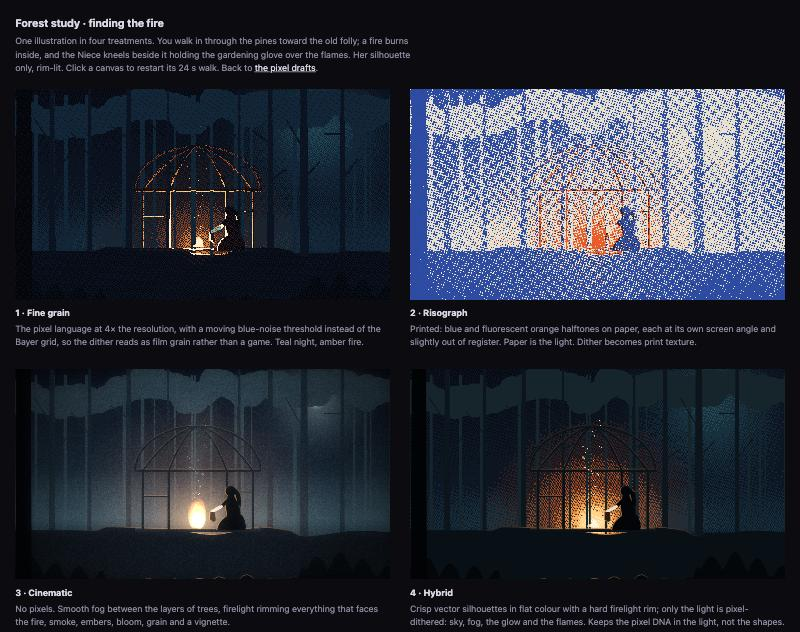
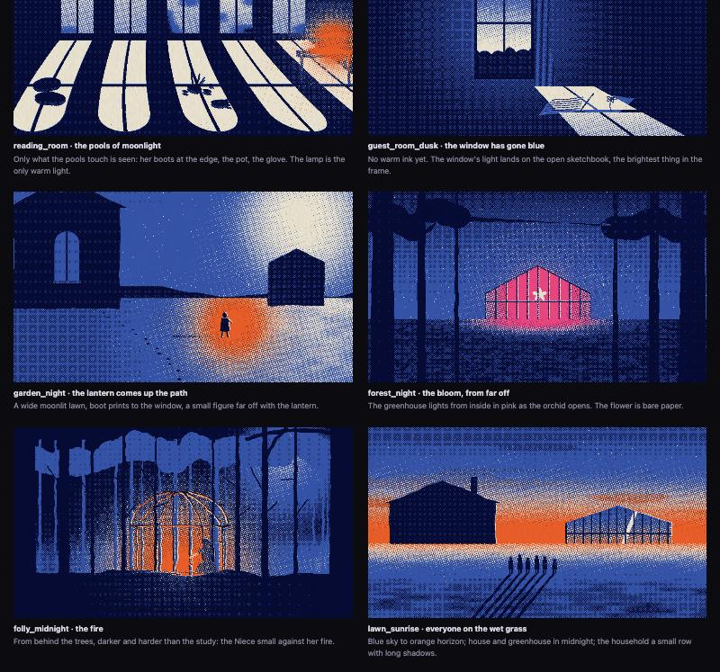
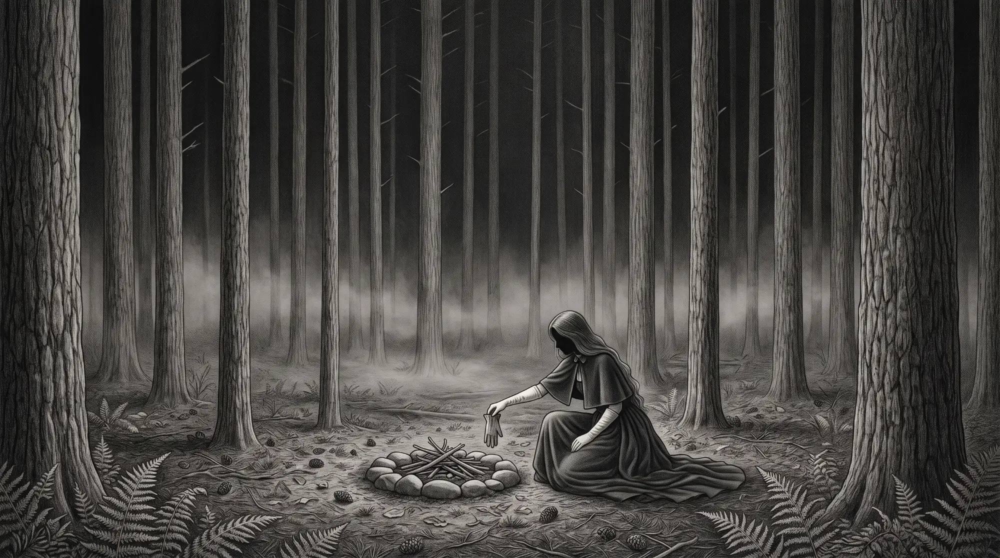
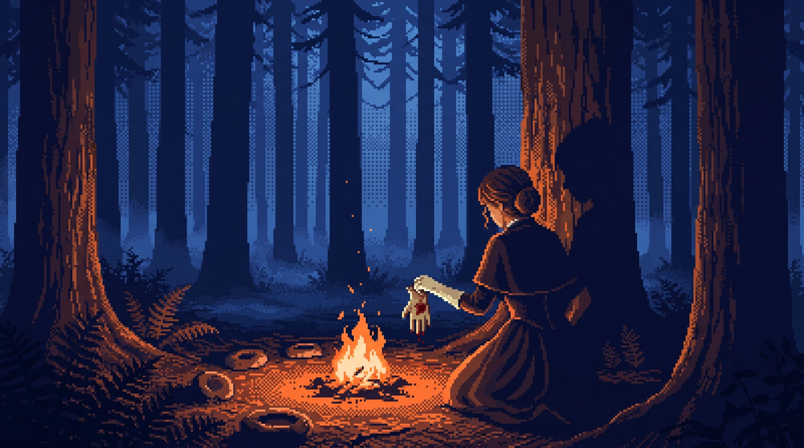
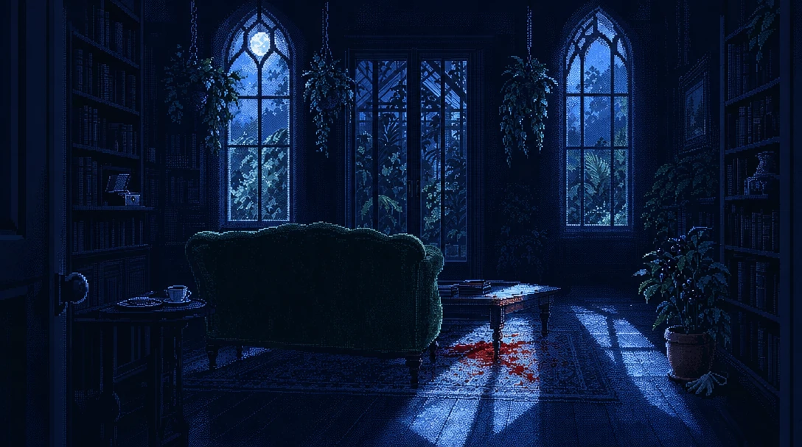
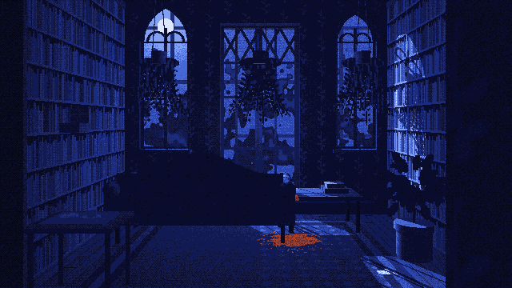
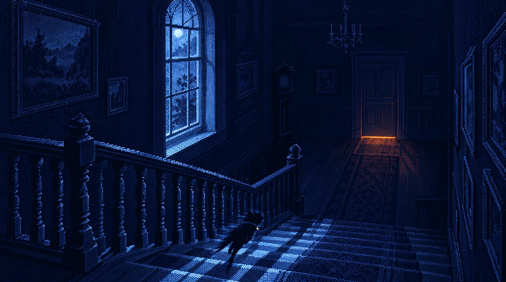
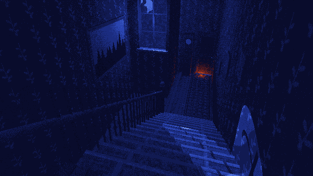

A small murder-mystery game for the browser. These are the visual tests so far.
A botanical illustrator stays at a country house to draw an orchid that blooms one night a year. Someone dies during the night. The player looks around, talks to the household and works out what happened by morning.
Visual constraints: no characters on screen, no vector shapes, and warm light only from fires and lamps.
Low-res scenes with a limited palette and ordered dithering. Too retro.

One scene rendered four ways: fine grain, risograph, cinematic and hybrid. I went with the risograph.

Three colours: dark navy, blue and orange. Orange only for light sources.

The code-only drawings lacked detail. Generated images had detail but looked generic and couldn't be animated. I used them as references and rebuilt each scene in code.


Rooms are built as simple 3D models so the moonlight and shadows line up with the windows. Left: reference. Right: in game.



